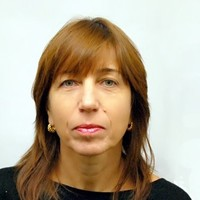
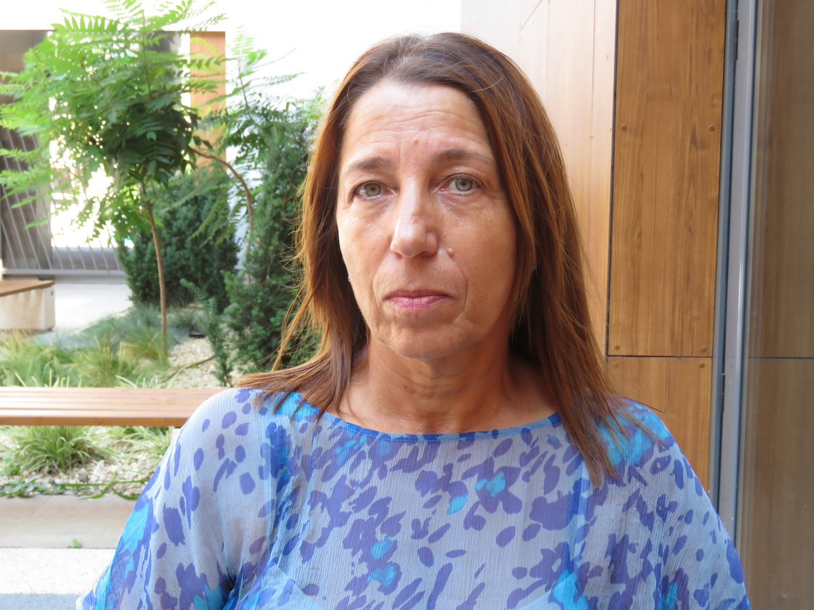
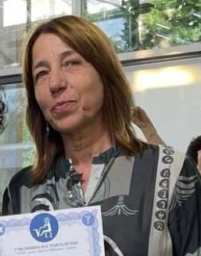

VIII. клас
Информационните технологии са най-интересният и определено най-съвременният и съответно належащ предмет с който се срещаме в в 8-ми клас. Нашето пътешествие сред тях тази година е умело навигирано и ръководено от г-жа С. Димова, която бе толкова мила и добра, че позволи да пишем плановете си на компютър, а сайт да правим на всякакви теми. Точно поради това този сайт ще бъде за обучението ни по предмета информационни технологии и съотевтно за плановете ни по предметните уроци.



Г-жа Соня Димова
📘 Урок I – Информационни технологии за социално общуване
Отвори урок📘 Урок II – Съвместна работа и обучение
Отвори урок📘 Урок III – Ефективно търсене на информация
Отвори урок📘 Урок IV – Съвременни компютърни системи
Отвори урок📘 Урок V – Съвременни операционни системи
Отвори урок📘 Урок VI – Принципи на действие на съвременните мобилни устройства и комуникации
Отвори урок